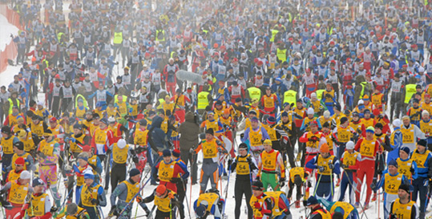
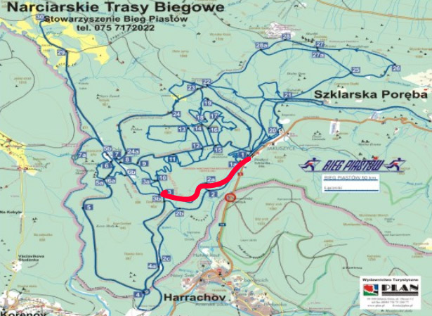
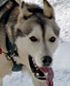
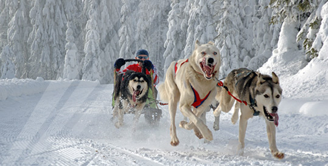
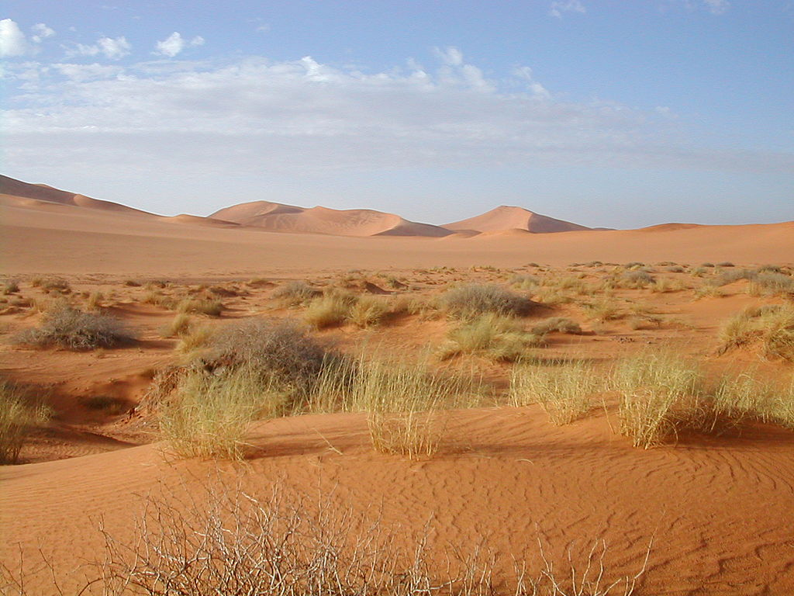
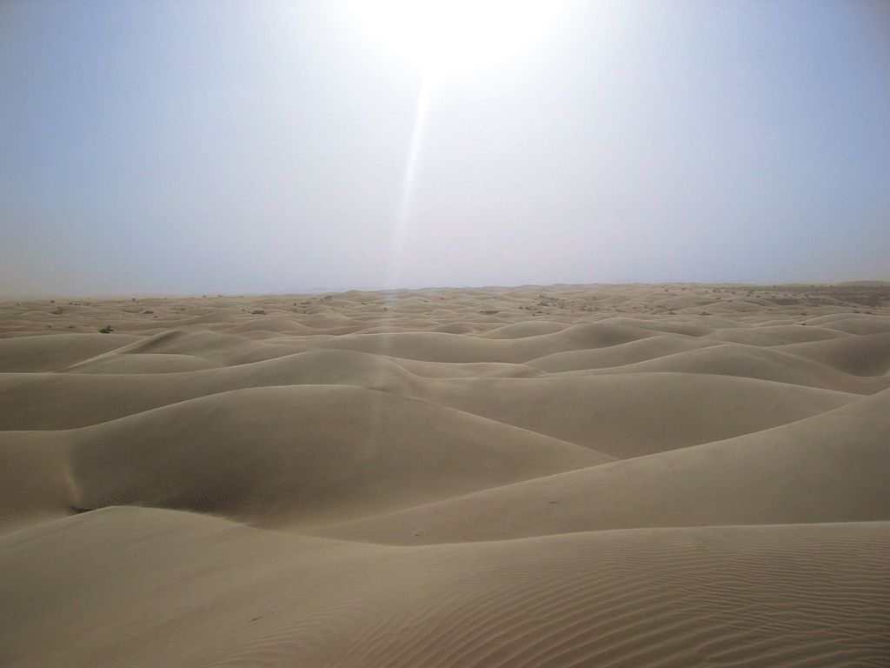

hello World hello World hello World hello World hello World hello World hello World hello World hello World hello World hello World hello World hello World hello World hello World hello World hello World hello World hello World hello World hello World hello World hello World hello World hello World hello World hello World hello World hello World hello World hello World hello World hello World hello World hello World hello World hello World hello World hello World hello World hello World hello World hello World hello World hello World hello World hello World
Aktualnie trwa 42. Bieg Piastów – Festiwal Narciarstwa Biegowego 2018!Poniżej przedstawiamy garść informacji praktycznych.W rejonie Polany Jakuszyckiej (od dawnego stoku Babiniec po granicę z Czechami) nie będzie możliwości parkowania samochodów, ani na parkingach, ani wzdłuż drogi.

Trasy biegowe w Jakuszycach to doskonałe warunki do uprawiania narciarstwa biegowego dla amatorów i wyczynowców. Dzięki doskonałym warunkom klimatycznym pokrywa śnieżna zalega grubą warstwą do późnej wiosny. Od lat na terenie ośrodka rozgrywana jest znana wśród miłośników narciarstwa biegowego impreza sportowa - Bieg
Narciarskie trasy spacerowo - turystyczne około 100 km Wszystkie trasy tworzą pętle w kształcie listka koniczyny i łączą się ze sobą, dając możliwość łączenia tras przejazdu lub wyboru z dostosowaniem do własnych potrzeb.

Szklarska Poręba jako jedno z nielicznych polskich miast posiada doskonałe warunki do uprawiania wspaniałego sportu - jazdy psimi zaprzęgami. Szczególnie nadają się do tego trasy i drogi w Górach Izerskich, gdzie zimowa aura trwa nieprzerwalnie nawet do późnej wiosny.
| Numer startowy | Nazwa drużyny | Czas | Miejsce OPEN | |
|---|---|---|---|---|
| netto | brutto | |||
| 234 |  | 45:26:01 | 45:27:00 | 1 |
| 34 | Niepokonane psiaki | 45:27:56 | 46:02:02 | 2 |
| 65 | Kłapiące uszy | 51:30:00 | 52:05:34 | 3 |
Tradycje narciarstwa w Szklarskiej Porębie sięgają końca XIX w. Tutaj powstał w 1900 r. pierwszy po śląskiej stronie gór klub narciarski "Windsbraut" - "Huragan". Organizowano liczne zawody, a narciarzom przygrywała myśliwska kapela. Tutaj, jak nigdzie indziej w Sudetach, rozwinęło się narciarstwo, planowano też odbycie zimowych igrzysk olimpijskich w 1936 r.

Sahara – strefa pustynna położona w północnej Afryce. Jest ona największą gorącą pustynią na Ziemi (ma 9 064 300 km²), rozciągająca się na długości 5700 km od Oceanu Atlantyckiego na zachodzie po Morze Czerwone na wschodzie; od północy ograniczona jest górami Atlas i wybrzeżem Morza Śródziemnego.

Występujące na pustyniach szaroziemy mają bardzo słabo rozwiniętą warstwę próchniczą, lub całkowity jej brak. Powoduje to bardzo rzadkie występowanie roślin na tych terenach. W niektórych miejscach znajdują się oazy z dostatkiem wody i bujną roślinnością. Jest tu znacznie więcej zwierząt niż w otwartym terenie.
Pustynia sprawia wrażenie pozbawionej wszelkiego życia, ale nawet w tych wyjątkowo trudnych warunkach żyją rośliny i zwierzęta. Rośliny występujące na pustyniach przystosowane są do oszczędnej gospodarki wodą i do ochrony przed wysokimi temperaturami w ciągu dnia. Występujące rośliny to: dzikie oliwki, oleandry (roślinność pn. Sahary) pistacje, tamaryszek oraz akacja (południowa część Sahary). Środkowa część Sahary jest pozbawiona roślinności.
